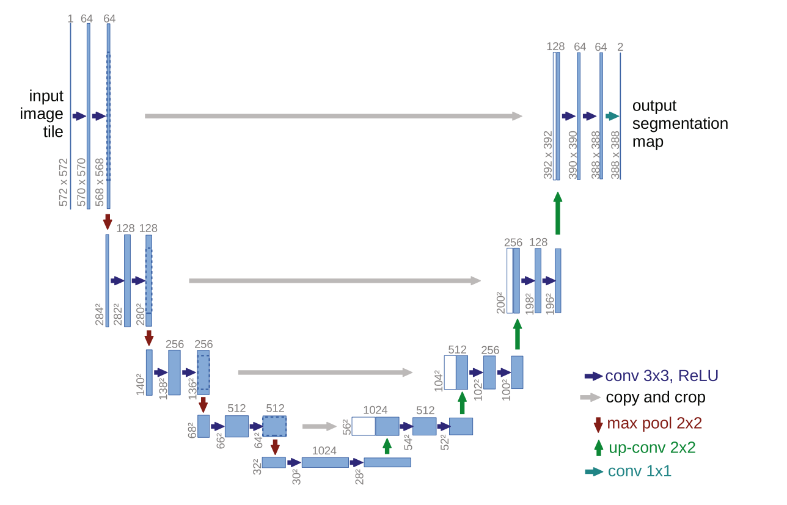
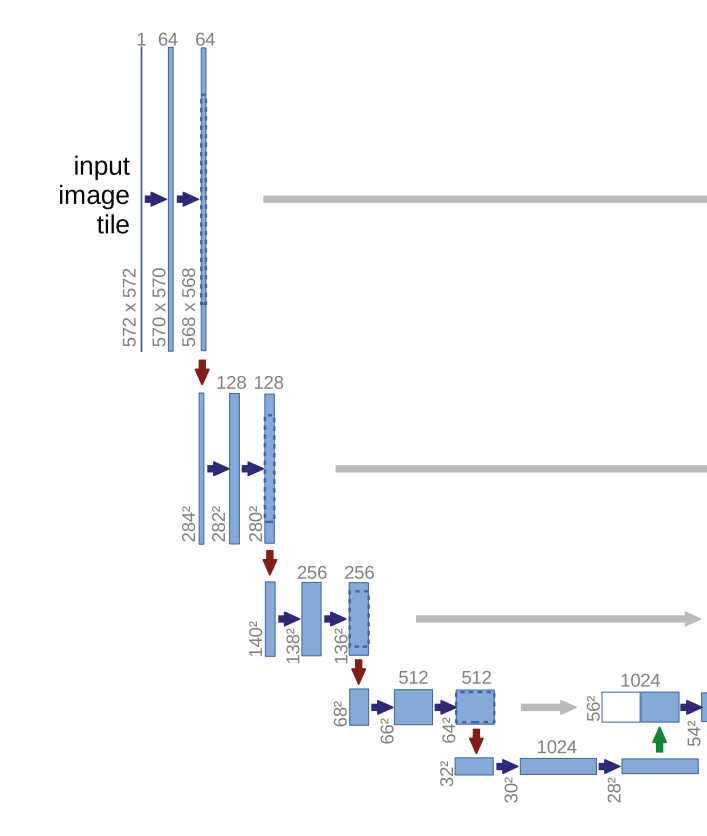
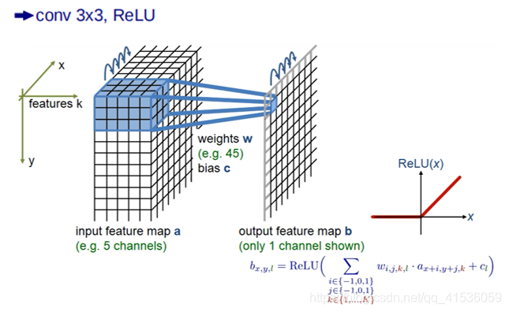
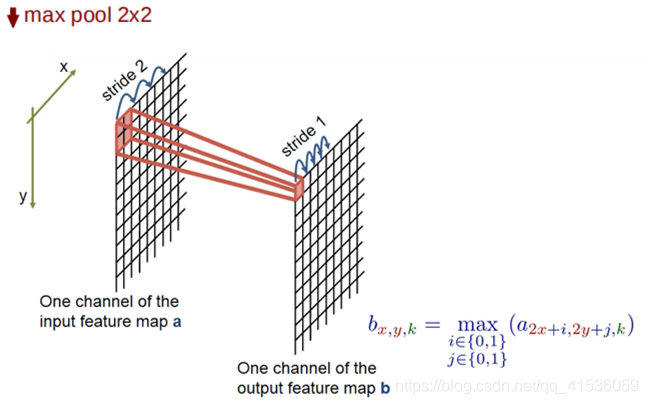
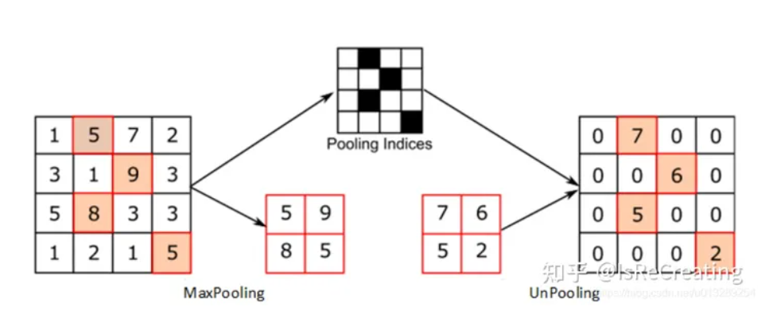
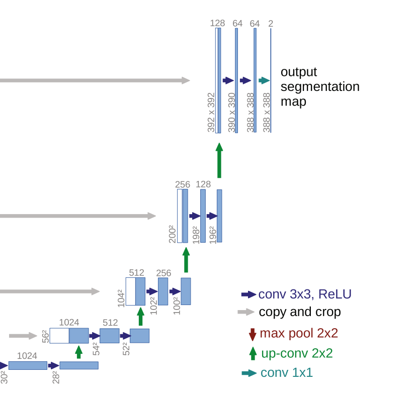
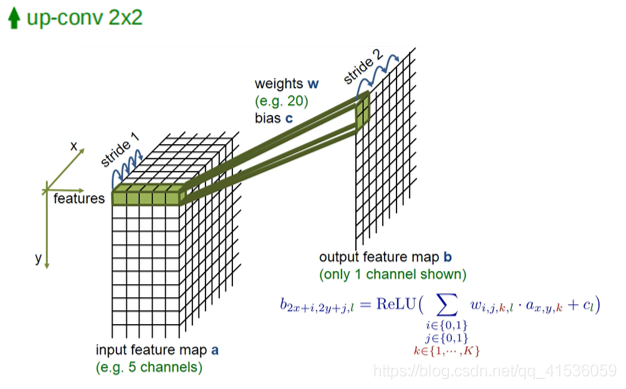
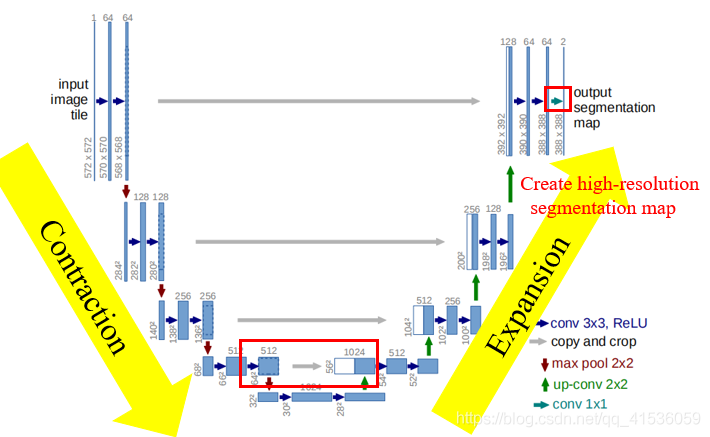
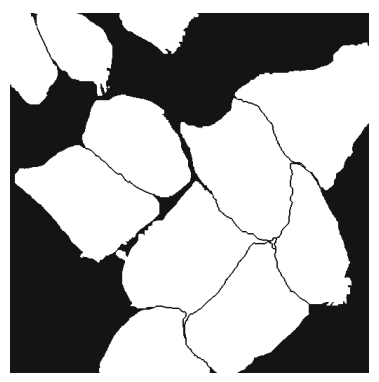

U-Net：用于生物医学图像分割的卷积网络
问题发现与分析
- 第一个问题，对于大部分神经网络来说，要想获得良好的性能，需要用大量的标签数据进行训练，这对生物医学图像来说，是非常困难并且难以实现的
- 第一个问题，对于大部分神经网络来说，要想获得良好的性能，需要用大量的标签数据进行训练，这对生物医学图像来说，是非常困难并且难以实现的
- 第二个问题，当时最好的网络速度慢，有大量重叠冗余的训练，并且不能平衡好定位精度和全局信息的关系
- 第一个问题，对于大部分神经网络来说，要想获得良好的性能，需要用大量的标签数据进行训练，这对生物医学图像来说，是非常困难并且难以实现的
- 第二个问题，当时最好的网络速度慢，有大量重叠冗余的训练，并且不能平衡好定位精度和全局信息的关系
- 第三个问题，在分割细胞图像时，如何分离互相接触的同类细胞，这也是一个挑战
如何解决这些问题？
- 第一个问题，对于大部分神经网络来说，要想获得良好的性能，需要用大量的标签数据进行训练，这对生物医学图像来说，是非常困难并且难以实现的
- 第一个问题，对于大部分神经网络来说，要想获得良好的性能，需要用大量的标签数据进行训练，这对生物医学图像来说，是非常困难并且难以实现的
- 解决方法：对量少的训练图像进行弹性变形来大幅扩展数据，从而解决训练数据集的限制。
- 第二个问题，当时最好的网络速度慢，有大量重叠冗余的训练，并且不能平衡好定位精度和全局信息的关系
- 第二个问题，当时最好的网络速度慢，有大量重叠冗余的训练，并且不能平衡好定位精度和全局信息的关系
- 解决方法：提出一个U型网络结构，也就是我们说的U-Net，通过在常规的压缩层后增加扩展层，将图像的全局信息传播到分辨率更高的层，以产生更精确的分割；并且它只需要少量的训练数据。
- 第三个问题，在分割细胞图像时，如何分离互相接触的同类细胞，这也是一个挑战
- 第三个问题，在分割细胞图像时，如何分离互相接触的同类细胞，这也是一个挑战
- 解决方法：给接触细胞的边界赋予更大的权重，使用加权损失函数来分离接触的细胞。
数据增强
当只有很少的训练样本可用时，数据扩充对于教会网络所需的不变性和鲁棒性是至关重要的。(平移和旋转不变性，对变形和灰度值变化有鲁棒性) 通过弹性形变处理训练数据从而扩展图像，在生物医学分割中特别重要也很常见，因为变形是生物组织中最常见的变化，可以有效地模拟真实的变形。因此可以有效增强网络的鲁棒性。
-
随机变形、旋转等不规则变化来增强图像
网络结构
网络由左边的收缩网络和右边的扩张网络组成，这两部分网络是完全对称的，并在相同层之间通过concatenation操作进行连接。这样的网络结构像一个U，所以称他为U-net。
收缩网络部分，是典型的卷积网络结构，每一层由两次卷积和最大池化操作组成；concatenation部分包括复制和裁剪操作
收缩网络由4层组成，它的每一层，对于输入图像，首先进行两次3x3的卷积，进行特征提取。然后，用ReLU激活函数增强非线性，避免了梯度爆炸和梯度消失问题。每次进行3x3的卷积，图像就会丢掉一个像素宽度的边界信息。因此，图像尺寸在不断减小。
两次卷积过后，进行2x2的max pool最大池化操作，来进行特征选择和信息过滤。max-pooling提取显著特征的同时降低模型的参数，从而降低模型的过拟合。操作过后的feature map的分辨率会减小为原来的一半，并且图像的x-y 尺寸也会减半。
上下采样原理图
扩张网络与收缩网络是对称的，首先对输入图像进行2x2的上卷积操作来上采样，将feature map还原到原图大小。
上采样
拼接收缩网络和复原网络
白色的是前景（细胞）黑色的是背景
训练网络
数据导入
函数定义
试验过程
基本任务

介绍

介绍2
Reveal.js的优点
界面优美
运行简单
功能强大
Reveal.js的优点
界面优美
运行简单
功能强大
Reveal.js的优点
界面优美
运行简单
功能强大
Reveal.js的优点
界面优美
运行简单
功能强大
- 1 列表展示
- 1 列表展示
- 2 给老师一点
- 1 列表展示
- 2 给老师一点
- 3 小小的js震撼